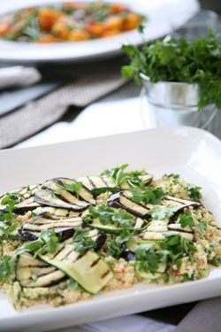

At Cotto we like to cater for all different occasions – no matter how small. Our goal is to ensure the food and service exceeds expectations. We are open and flexible enough to deliver whatever our clients require.
We understand how difficult it can be having friends round for dinner after a busy day at work. The shopping and then the cooking can be stressful and time consuming. Then when the evening arrives often the host or hostess cannot spend time with their guests as they are confined to the kitchen.
Then there is always the dreaded washing up afterwards! At Cotto we want to remove all these worries. We can be there to do everything for you. Or alternatively we can deliver all the food beforehand (with some detailed instructions) and you can pass it off as your own! Have a look at our seasonal dinner party menus.
At Cotto we absolutely love doing canapés. We enjoy the challenge of creating flavour filled bites and nibbles. All our canapés are freshly assembled just before service. We have a wide array of options suitable for all kinds of occasions – from a drinks party for 30 in your own home to a corporate gathering for 250 or more. Please cast your eye over our sample canapé and bowl food options here.
Whatever the reason – a birthday, an anniversary or a family gathering – let us put on a long leisurely lunch for you.
We really enjoy bringing our brand of catering to the corporate world. We understand the need for professionalism and excellence when hosting clients and colleagues. From breakfast and lunch time meetings to drinks receptions and even office parties, we can cover it all for your company.
Forget the soggy sandwiches and supermarket bought scotch eggs. At Cotto we think we can do a lot better than that. We believe that you deserve good food regardless of your location. Whether that be admiring the view from Primrose Hill, in the car park before a rugby match at Twickenham or watching the cricket at Lord’s – all are more enjoyable with a proper picnic.
For those times when you just do not feel like being in the kitchen or for the odd emergency, we offer a selection of simple dishes suitable for home freezing. Available in individual or family sized portions.
We are open to helping out with any other catering conundrums. In the past we have catered for weddings, christenings, group weekends away as well as stag and hen parties. Whatever you might need please do get in touch.